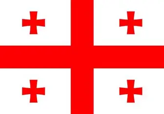

საქართველოს დროშის ისტორია მრავალსაუკუნოვანია და მისი პირველი წერილობითი მოხსენიება IX საუკუნით თარიღდება. მოკლე პასუხი: საქართველოს დროშის ტრადიცია იწყება შუა საუკუნეებიდან, სხვადასხვა ეპოქაში იცვლებოდა, ხოლო თანამედროვე „ხუთჯვრიანი“ ვერსია ოფიციალურად აღდგა XXI საუკუნეში. 🏰 შუა საუკუნეები და პირველი წყაროები ტერმინი „დროშა“ ქართულ წერილობით წყაროებში IX საუკუნიდან გვხვდება დროშის აღსანიშნავად გამოიყენებოდა სიტყვები: „ალამი“, „დრაუჟი“, „ბაირაღი“, „ბავრაყი“ საქართველოს სამეფოები და სამთავროები სხვადასხვა ფერისა და სიმბოლიკის დროშებს იყენებდნენ. ხუთჯვრიანი დროშის წარმოშობა ხუთჯვრიანი თეთრ-წითელი დროშა ისტორიულად უკავშირდება გიორგი ბრწყინვალის ეპოქას (XIV ს.). ეს სიმბოლო ხშირად მოიხსენიება როგორც იერუსალიმის ჯვრის ტიპის კომპოზიცია, რომელიც ქრისტიანულ-გიორგიანულ ტრადიციას უკავშირდება. 🇬🇪 თანამედროვე სახელმწიფო დროშა საბჭოთა პერიოდში საქართველოს ჰქონდა სრულიად განსხვავებული, წითელ ფერში შესრულებული დროშა. ხუთჯვრიანი დროშა ოფიციალურად აღდგა 2004 წელს, საქართველოს ორგანული კანონით, რომელიც ეხებოდა სახელმწიფო დროშის ცვლილებას .

საქართველოს კულტურასაქართველოს ხუთჯვრიანი დროშა ქართულ კულტურაში აღიქმება როგორც სიწმინდის, ქრისტიანული ტრადიციის, ერთიანობისა და ეროვნული თვითმყოფადობის მთავარი სიმბოლო. ისტორიული ფესვები ქართულ კულტურაში საქართველოს დროშის კულტურული მნიშვნელობა საუკუნეების განმავლობაში ყალიბდებოდა. XI–XVI საუკუნეების წყაროები მას „გორგასლიან და დავითიანს“ უწოდებენ, რაც მიუთითებს, რომ დროშა დაკავშირებული იყო ვახტანგ გორგასლისა და დავით აღმაშენებლის ეპოქებთან, ანუ იმ პერიოდებთან, რომლებიც ქართული სახელმწიფოებრიობის სიმტკიცესა და კულტურულ აღმავლობას აღნიშნავს ეს თეთრი ფერისა და წითელი ჯვრის სიმბოლიკა ქართულ ცნობიერებაში ასოცირდებოდა ქრისტიანობასთან, რომელიც ქართული კულტურის ცენტრალური ღერძია. ქრისტიანული სიმბოლიკა – კულტურის საფუძველი თანამედროვე სახელმწიფო დროშის ზუსტი აღწერა — თეთრი ფონზე დიდი წითელი ჯვარი და ოთხი ბოლნურ-კაცხური ჯვარი — ოფიციალურად განისაზღვრა 2004 წლის პრეზიდენტის ბრძანებულებით ჯვრების ეს კომპოზიცია ქართულ კულტურაში განიხილება როგორც: სიწმინდისა და მშვიდობის სიმბოლო (თეთრი ფონი); ქრისტიანული რწმენისა და ტრადიციის გამოხატულება (ხუთი ჯვარი); ისტორიული მემკვიდრეობის გაგრძელება, რომელიც შუა საუკუნეებიდან მოდის. ეროვნული იდენტობა და ერთიანობა დროშა თანამედროვე ქართულ კულტურაში აღიქმება როგორც ერთიანობის სიმბოლო. როგორც სახელმწიფო ლიდერების განცხადებებში ხაზგასმულია, დროშა განასახიერებს თავისუფლებას, დამოუკიდებლობას, ეროვნული ცნობიერებასა და სიმტკიცეს ტაბულა +1 .
საქართველოს სახელმწიფო გერბი არის მეწამულ ფარზე წმინდა გიორგის გამოსახულება, რომელსაც ამშვენებს ივერიული გვირგვინი, ორი ოქროს ლომი და დევიზი „ძალა ერთობაშია“. ძირითადი ელემენტები (მოკლედ) ჰერალდიკური ფარი — მეწამული ფერი, რომელზეც გამოსახულია წმინდა გიორგი ვერცხლის ცხენზე, ოქროს ჯვრით დაბოლოებული შუბით გველეშაპის განმგმირავი გვირგვინი — ფარი დაგვირგვინებულია ივერიული (ქართული) გვირგვინით ფარისმტვირთველები — ფარს ორივე მხრიდან უჭერენ ორი ოქროს ლომი, რომლებიც ვაზის სტილიზებულ ორნამენტზე დგანან ბაფთა და დევიზი — ფარის ქვედა ნაწილში არის ვერცხლ-მეწამული ბაფთა, რომელზეც ქართული მხედრული ანბანით წერია დევიზი: „ძალა ერთობაშია“ თუ გსურს, შემიძლია ასევე მოგაწოდო გერბის ისტორია, სიმბოლიკის მნიშვნელობა ან მცირე სახელმწიფო გერბის მოკლე აღწერაც.